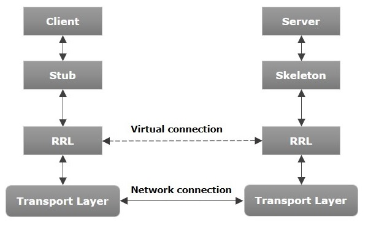

java.rmi package • Distributed Computing • JVM-to-JVM Communication
RMI (Remote Method Invocation) is a Java API that allows objects in one Java Virtual Machine (JVM) to invoke methods on objects located in another JVM.
It enables distributed application development by allowing seamless communication between a client and a server over a network. RMI is part of the java.rmi package.
The RMI architecture consists of the following main components:
Requests remote services
Invokes methods on remote objects as if they were local.
Acts as a proxy for the remote object on the client side.
Intercepts method calls and forwards requests to the server via the Remote Reference Layer.
Manages the virtual communication between the client and server.
Establishes and manages the actual network connection using TCP/IP.
Receives requests from the stub via the transport layer and passes them to the actual remote object implementation for execution.
Contains the actual remote object implementation.

Skeleton → Transport Layer → RRL → Stub → Client